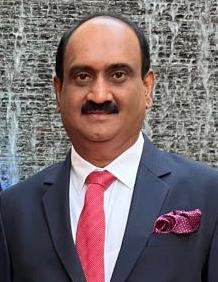

Welcome to my official personal and professional space on the web.

Hello! I am Kotla Srinivasa Reddy Krishna Reddy (Dr. K S Krishna Reddy) also known as DKR is an officer belonging to Karnataka Engineering Service (KES) cadre, served 41 years as an Engineer and Public Works Administrator from Karnataka, INDIA.
DKR mother’s Maternal Uncle Sri K Sanjeeva Reddy was instrumental in founding Socialist Party of India (1955) and an MLC in Karnataka along with his associates like Shantaveri Gopala Gowda, Sri Mulka Govinda Reddy, who represented Rajya Sabha 4 times from Indian National Congress (INC). Maternal grandfather of me; Sri Bhavanam Thippa Reddy was actively involved in Freedom struggle and was kept in Belgaum jail for more than One year. He received an Honor from Government of Karnataka by the way of Thamra Pathra/Copper Plate for his selfless services rendered during freedom struggle.
I was born on 14th May 1963 to B. T. Gangamma and Kotla Srinivasa Reddy. We come from an agricultural family in Haykal village, Chitradurga taluk and district, Karnataka. Completed graduation, post-graduation and Ph.D in engineering from Government B.D.T. College of Engineering, Davanagere.
I served in several senior engineering and administrative roles connected with road infrastructure in Karnataka.
I was appointed Chief Project Officer (CPO) of the KSHIP in 2012 and served as Managing Director of the Karnataka Road Development Corporation Limited (KRDCL) from 2013 to 2018. In June 2018, I became Secretary to the Government of Karnataka in the Public Works Department (PWD), a post equivalent to the Engineer-in-Chief cadre and held the position until May 2023, while also holding concurrent charge as Chief Project Officer (CPO) of the Karnataka State Highways Improvement Project. From August 2023 to April 2025, I served as Chief Executive Officer (CEO) of the Karnataka State Road Regulatory and Development Authority (KSRRDA) in the PWD, a role equivalent to the rank of Principal Secretary to the Government of Karnataka (GOK).
DKR was credited with work on innovative procurement models and efficient project delivery for road infrastructure in Karnataka & was involved in preparing procurement documents for elevated roads between Hebbal, Bengaluru flyover and Silk Board junction in Bengaluru during 2007-2009.
During 2009-2011, he was instrumental in promoting unique concept of Finance plus Model by creating hybrid-annuity PPP model in road-sector projects under the Karnataka State Highways Improvement Project; first-time under State Highway Sector in India.
DKR is instrumental in bringing new financial structuring model i.e., co-financing model leveraging World Bank (WBG), domestic banks and private investment in the Karnataka Road Development Corporation Limited (KRDCL). World Bank (WBG) and Asian Development Bank (ADB) funded projects worth Rs. 10,000 Crore with state support funding were completed during 2009-2018 under KSHIP and KRDCL through dispute-resolution mechanisms to mitigate the project disputes.
He was also credited with introducing precast segmental box technology for grade separators, underpasses and subways in Bengaluru, referred to in media as Magic Box; MANDATING road-safety audits for road projects costing Rs. 10 crore and above; and requiring specific road-safety allocations in project costs.
DKR was involved in assessing environmental impact and environment management planning measures for road projects such as, afforestation near roads, conservation of water bodies and the incorporation of environmental management into the Public Works Department code. During his work on Karnataka Road projects, nocturnal animal movement near wildlife sanctuaries was studied and environmentally compatible crossing-protection measures were adopted.
Recognizing the irrigation challenges in the drought-prone district of Chitradurga, where agriculture is largely dependent on rainfall and borewells, DKR has persuaded the fellow engineers in the irrigation department for the implementation of the Upper Bhadra Project to improve irrigation infrastructure and support farmers. He has also supported educational initiatives for students through assistance to educational institutions. In addition, DKR has contributed to the development of rural infrastructure, including roads and public amenities, organized rural medical camps to improve access to healthcare in underserved villages, and supported the construction and renovation of places of worship and other community facilities.
Recognizing the irrigation challenges in the drought-prone district of Chitradurga, where agriculture is largely dependent on rainfall and borewells, DKR has persuaded the fellow engineers in the irrigation department for the implementation of the Upper Bhadra Project to improve irrigation infrastructure and support farmers. He has also supported educational initiatives for students through assistance to educational institutions. In addition, DKR has contributed to the development of rural infrastructure, including roads and public amenities, organized rural medical camps to improve access to healthcare in underserved villages, and supported the construction and renovation of places of worship and other community facilities.
DKR served as Vice President of the Indian Roads Congress in 2017-2018 and President in 2018-2019. The Indian Roads Congress list of presidents records him as President for the 79th annual session, held at Nagpur, Maharashtra, in November 2018.
DKR received the Eminent Engineer Award from the Institution of Engineers (India), Bengaluru, in 2010, and the Sri M. Visvesvaraya Outstanding Engineer Award from the '''Karnataka State Council for Science and Technology (KSCST), Government of Karnataka in 2014.
DKR is a fellow of the Institution of Engineers (India), a life member of the Indian Institution of Bridge Engineers''', a life member of the Indian Roads Congress & governing council member, and a life member of Indian National Group of the International Association for Bridge and Structural Engineering (ING-IABSE).
He has also visited many countries to study and acquire skills to implement road infrastructure projects in India.